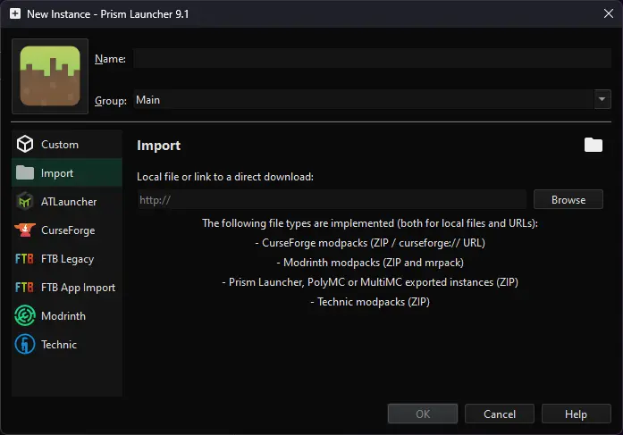

Back
MKSoc Minecraft Server
Information about the Mario Kart Society Minecraft Server
Page Contents
Minecraft version: 1.21.4 (Java) / 1.21.51 (Bedrock)
IP Address (Java):mksoc.minecraft.party
Port:25565 (default)
IP Address (Bedrock):bedrock.mksoc.minecraft.party
Port:3953
Max render distance:22 Chunks
Simulation distance:16 Chunks
Difficulty:Hard


#Changelog
-
2024-12-10 Updated server to 1.21.4 (The Garden Awakens drop)
-
2024-11-01 Updated server to 1.21.3 (Bundles of Bravery drop)
-
2024-06-18 Updated server to 1.21
-
2024-04-30 Updated server to 1.20.6, 1.20.5 clients can still connect. 1.20.4 support removed due to bugs
-
2024-04-28 Updated server to 1.20.5, 1.20.4 clients can still connect
-
2024-04-03 Fixed the nether roof for bedrock players,
render distance, simulation distance
and entity range have been increased
-
2024-03-25 Bedrock players can now via
bedrock.mksoc.minecraft.party (port:3953)
-
2024-03-24 A new domain for the server is in use -
mksoc.minecraft.party
-
2024-03-23 Server testing!
#Mods
Below are the minecraft mods I use for a 1.21
Fabric Minecraft instance.
I use PrismLauncher
to manage instances and download mods, but a normal Fabric loader instance
(launched from the regular Minecraft launcher) will work fine (as long as you know
where the place mods manually).
For either the launcher, or a standalone
fabric loader instance,
you will need Java (lastest version) installed on your computer, which you
can find here:
https://adoptium.net/en-GB/temurin/releases/.
Note: On Macs with Intel processors, you need to install the x64 version
of Java, on Macs with Arm 64 (M1) processors, you need to install the
Arm 64 (aarch64) version of Java.
#Mod List
These mods mainly focus on optimisation (improving game FPS) and
quality of life (qol) features.
Mods in (brackets) are API mods
that are required for other mods to work.
This mod list may be updated from time to time, so please check back!
These mods can be downloaded from
https://modrinth.com/. Or
alternatively by importing the mod pack into your preferred launcher (like PrismLauncher).
#Modpack Download
The modpack can be downloaded here:
1.21.4 Optimised v1.0.2.mrpack.
View previous versions
To import it into PrismLauncher, click the Add Instance button,
then click on the Import tab and click Browse.

Locate the 1.21.4 Optimised v1.0.2.mrpack file and open it. Then press the OK button at the bottom and the
correct mods will be downloaded!
The instance is now ready to play!
Note: You may get an error about 'Java version incompatibility',
skipping the check normally solves this issue. You can do this by
navigating to Settings > Java > Skip Java compatibility checks.
#Updating an Existing Modpack
You can update an existing modpack, downloading and adding new mods
and resource packs by following these steps:
Note: You can only update instances that were created from a previous modpack template
(eg: updating 1.21.4 Optimised v1.0.0 to 1.21.4 Optimised v1.0.2).
Right-click an existing instance and select Edit.
Select the Modrinth tab then select Update from file.
Select the updated modpack file and PrismLauncher will download the update-to-date files.